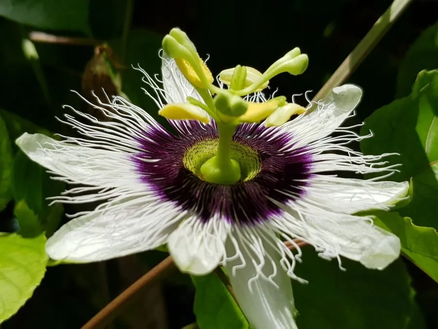

农作物与经济植物 · 植物界
百香果 Passiflora edulis

百香果是西番莲科多年生藤本，果实圆润、香气浓郁、酸甜多汁，富含维生素，可鲜食或制果汁，是热带常见水果。
- 分类
- 门被子植物门纲双子叶植物纲目金虎尾目科西番莲科属西番莲属
- 栖息环境
- 热带与亚热带山坡，喜温暖光照，忌积水
- 地理分布
- 原产南美洲，现栽培于中国广西、福建、云南及东南亚
- 保护级别
- 暂无评估（栽培作物）
物种志
百香果是西番莲科多年生草质藤本，茎细长，叶腋生出卷须，能缠绕棚架攀援。叶片掌状三裂，边缘有锯齿，叶面光滑。花单生，花形奇特，花瓣白色，副花冠呈紫蓝色丝状，中央有雌雄蕊。果实为浆果，圆形或椭圆形，成熟时紫红或黄色，果皮硬，果肉橙黄，含多数黑色种子。
百香果原产南美洲巴西、阿根廷一带，后传入澳大利亚、夏威夷和东南亚。它喜温暖、光照充足，不耐寒，适宜在疏松肥沃、排水良好的土壤生长。果实成熟后会自然脱落，可拣拾收集。果肉香气浓郁，多制果汁、果酱、甜点，也可连籽鲜食；果皮可提取果胶。中国广西、福建、云南等地栽培较多，果汁常与蜂蜜、柠檬搭配饮用。
形态与习性
- 生长型多年生草质藤本
- 叶掌状三裂，有卷须
- 花副花冠紫蓝色丝状
- 果实紫红或黄色浆果
- 果肉橙黄，含黑色种子
- 用途鲜食、果汁与果酱
趣味知识
- 百香果的花有丝状副花冠，结构奇特，常被称为西番莲。
- 百香果成熟后会自然落果，果农常在地面拣拾。
- 果肉里的黑色种子可以一起食用，富含膳食纤维。